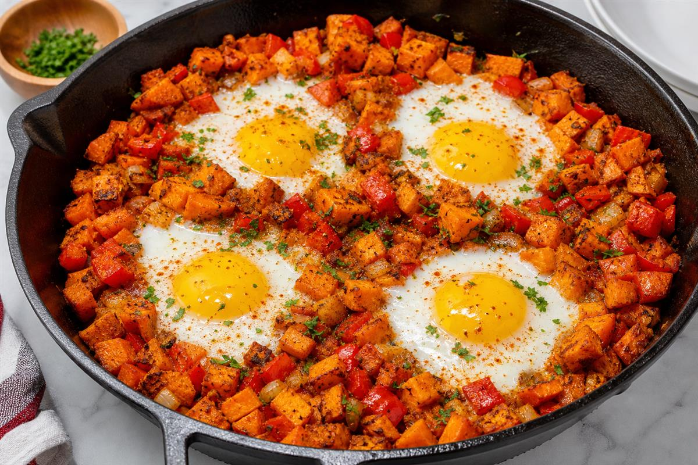

Sweet Potato Breakfast Hash
Ingredients
- 2 sweet potatoes, diced
- 1 red pepper
- 4 eggs
- Paprika
- Olive oil
Method
- Cook sweet potatoes until tender.
- Add peppers and seasoning.
- Create wells and crack in eggs.
- Cover and cook until eggs set.
Huntress Notes
Gluten-free, onion-free. Excellent weekend breakfast.
Fox Notes
Add a photo of the finished dish and rate after testing. Suggested photo: bright natural lighting, rustic wooden table, forest-green accents.
